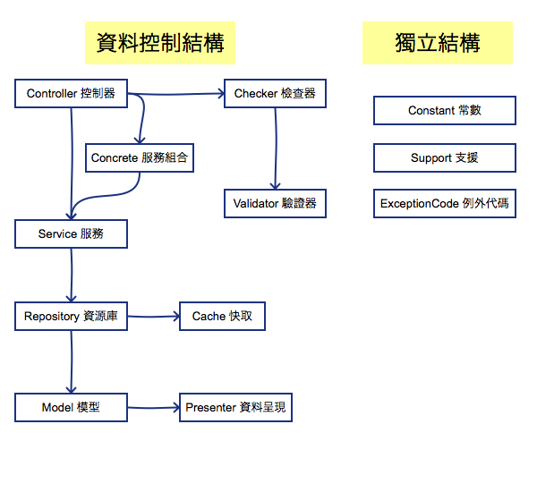

Service & Repository 架構設計準則（2017 年版本）
傳統的 MVC（Model, View, Controller） 框架，當 Controller 收到請求之後，我們會在 Controller 內直接透過 Model 去撈取資料庫的資料，並在 Controller 做資料驗證、整合、快取、商業邏輯判斷…等等的工作。
當系統越來越大，會發現很多類似的商業邏輯的程式都散在各地，沒有辦法重複再利用，當程式需要異動或修改的時候，就要去搜尋所有程式碼，把許多相同商業邏輯的程式碼去做異動，但需要修改的地方若太多，往往會東漏西漏，導致系統出現錯誤，並造成往後開發的時間成本增加。
所以我們會想要做到 減少重複的程式碼、提高維護開發的效率，所以將程式碼依照分類及分層抽出獨立控管，讓不同類型的程式專心處理自己相關的商業邏輯，讓開發維護更容易。
隨著程式架構的演進會發展出更多不同的架構，所以這個設計架構準則也是會隨著時間做演進的。
資料層級需求分析
Service (服務)
我們原本在 Controller 處理請求時，會針對使用者的請求，做不同商業邏輯的處理，而同樣的商業邏輯可能會被不同的 Controller 存取，為了讓同個商業邏輯程式能夠重複使用，所以我會分出一層 Service (服務) ，將這些商業邏輯放在裡面，供不同的 Controller 存取。
在 Service 方法中，會針對目前商業邏輯的資料進行蒐集與彙整，處理過後再回傳給 Controller
Repository (資源庫)
在不同 Service 可能會需要對資料庫撈取同樣的資料，為了避免撈取資料的邏輯重複出現在不同的地方，我們會分出一層 Repository (資源庫)，將同樣撈取 Model (模型) 資料的邏輯都寫在一起，供不同的 Service 存取。
在 Repository 中，會在 function 名稱中指出這個方法是要撈什麼樣的資料，這樣方法可以重用，也可以讓程式有可讀性，不需要再去看 Model sql 條件的邏輯，判斷是在做什麼樣的處理
e.g. PostRepository->getWeekTopPosts(); // 取得本週熱門文章
Model (模型)
在 Model 中我們僅會寫對資料表對 Eloquent 相關的設定，像是 primaryKey (主鍵名稱) 或 table (資料表名稱)，讓 Model 能夠越乾淨越好，將一些撈取資料的邏輯都往 Repository 集中整理。
Presenter (資料呈現)
在 Model 我們有一些資料可能會想要有不同的呈現方式，像是文章發布時間 created_at 我們可能會想要呈現出像是 5 秒前、15 分鐘前、6 小時前 這樣的資料，這些資料因為是隨著時間不同而去動態變化，所以需要用程式去計算與 created_at 的時間差，再去看要如何呈現這筆資料。
為了能夠讓這些不同資料呈現方式的邏輯能夠重複使用，且不污染 Model 的程式，所以我會分出一層 Presenter (資料呈現) 去輔助 Model 資料的呈現
e.g. Post->presenter()->created_at_human_time;
Cache (快取)
在使用 Repositoy 去對 Model 做存取得時候，如果我們資料沒有做異動，我們會將資料存放在快取中，直接讀取快取的資料，而減少對資料庫的存取，提高資料的存取效率
而我們需要對 資料快取的設定、清除 及 快取鍵值 去做管理，快取像是協助 Repository 做資料的存取，所以我會分出一層 Cache (快取) 去輔助 Repository 做快取的處理
Checker (檢查器)
而每個商業邏輯需要驗證的資料不同，有些欄位在不同商業邏輯會有必填與非必填不同的差異，像是在做使用者身份驗證時，若有 Email 驗證及手機驗證，在 Email 驗證時，手機欄位為非必填欄位，在做手機驗證時， Email 為非必填欄位，但兩者皆為使用者的資料，無法強制使用者兩個欄位資料皆為必填，但在某些商業頁邏輯是必要的，但基本的資料驗證規則還是一樣，像是資料最長長度、email 格式…等等。
所以為了能夠重複使用共用的驗證器規則，所以建構了一個 Checker（檢查器） 的結構，去呼叫不同的 Validator 去檢查資料，像是同一個 Controller 處理的資料可能含有「會員」、「商品」資料，所以同時需要呼叫 會員驗證器（UserValidator） 及 商品驗證器（GoodsValidator） 的驗證規則去驗證資料，所以就透過 Checker（檢查器） 去呼叫不同的驗證器，來達到驗證不同資料的功能，輔助 Controller 做資料驗證。
Validator (驗證器)
為了讓資料驗證方法能夠重複使用，不需要在不同的地方去驗證相同的東西，這樣會造成驗證邏輯重複出現，若有需要異動驗證規則時，會難以維護。
所以我沒有選擇將這些驗證的邏輯寫在 Services、Repository 或 Model 中。
所以我會分出一層 Validator (驗證器) 輔助 Checker（檢查器） 做資料驗證。
Concrete (服務組合)
我們會在 Controller 去呼叫各個不同的 Service 去做資料的判斷處理，有時候不同的 Controller 會有相同呼叫 Service 的邏輯順序及組合的資料，為了減少重複程式，所以我會分出一層 Concrete (服務組合) 去協助 Controller 去做不同 Service 資料的整合撈取
像是我們在許多 Controller 方法中，我們都要使用 $PostService->find($post_id); 去找文章資料，並用 $UserService->find($post_user_id); 去找文章作者相關資訊，這些在 Controller 重複出現的呼叫 Service 邏輯我們就可以寫在 Concrete 中去做呼叫
Constant (常數)
我們在做 Model 資料的撈取或是條件判斷時，可能會需要用 Post::where('status', 1)->get() 或 $Post->status == 1 去做資料的存取，但像 status 為 1 這種資料對我們是難以做閱讀的，需要知道 1 代表是什麼意思才知道此段程式的邏輯。
所以我會分出一層 Constant (常數) 輔助做資料的識別，我會將狀態設為可識別的靜態變數，像是 PostConstant::STATUS_PUBLISH = 1;，所以在做程式判斷時，可以用 Post::where('status', PostConstant::STATUS_PUBLISH)->get() 或 $Post->status == PostConstant::STATUS_PUBLISH 去做判斷。
在
Constant的變數皆為靜態變數，所以可以供任何類別去做存取。
Support (支援)
我可能會對一資源的資料做簡單的邏輯判斷，不需要依賴任何的 資料控制結構，像是 Service、Repository 或 Model，所以我會分出一層 Support (常數) 去做共用的輔助方法。
像是我們可以用 PostSupport::getAllPostStatus() 去撈取文章的所有狀態，或者用 GoogleAnalyticSupport::api() 去對 GA 的 API 做存取。
在
Support的方法皆為靜態方法，所以可以供任何類別去做存取。
ExceptionCode (例外代碼)
我們在做 API 的資料存取時，會針對不同的例外狀況回傳不同的 錯誤代碼 (error_code)，而同一個錯誤代碼可能在不同的 Controller 或 Service 被回傳，像是文章找不到我們會回傳錯誤代碼 10000001，為了管理及閱讀性方便，我會分出一層 ExceptionCode (例外代碼) 去做共用的例外代碼管理。
像是找不到文章的代碼我會設為 PostExceptionCode::POST_NOT_FOUND = 10000001;，所以在程式中只要看到 PostExceptionCode::POST_NOT_FOUND 就可以馬上知道這個是找不到文章的錯誤代碼。
在
ExceptionCode的變數皆為靜態變數，所以可以供任何類別去做存取。
資料層級結構
資料控制結構
- Controller (控制器)
- Concrete (服務組合)
- Service (服務)
- Repository (資源庫)
- Model (模型)
- Presenter (資料呈現)
- Cache (快取)
- Repository (資源庫)
- Service (服務)
- Checker (檢查器)
- Validator (驗證器)
- Concrete (服務組合)
獨立結構
- Constant (常數)
- Support (支援)
- ExceptionCode (例外代碼)
架構圖

結構說明
資料控制結構
| 結構名稱 | 說明 |
|---|---|
| Controller (控制器) | 控制要使用哪些 Service 或 Concrete 的商業邏輯，去組合出使用者請求需要的資料，並做資料的資料交易控制 (transaction) ，並使用 Checker 去檢查任何使用者傳進來的資料，確保資料的正確性 |
| Service (服務) | 做資料的驗證，並組合不同的 Repository 資料成商業邏輯，供 Controller 或 Concrete 存取 |
| Repository (資源庫) | 撈取屬於自己 Model 不同條件下的資料，並做快取控制，供 Service 存取 |
| Model (模型) | 資料表存取相關設定 |
| Presenter (資料呈現) | 協助 Model 做資料呈現處理 |
| Cache (快取) | 協助 Repository 做快取資料的控制 |
| Checker (檢查器) | 協助 Controller 做資料驗證 |
| Validator (驗證器) | 協助 Checker 做資料驗證 |
| Concrete (服務組合) | 協助 Controller 組合不同 Service 的資料成商業邏輯 |
獨立結構
| 結構名稱 | 說明 |
|---|---|
| Constant (常數) | 共用變數名稱設定 |
| Support (支援) | 共用方法 |
| ExceptionCode (例外代碼) | 共用例外代碼設定 |
架構使用原則
資料控制結構
存取限制
不能跨 2 階層以上存取
- Controller 不能存取 Repository
- Controller 不能存取 Validator
- Service 不能存取 Model
低階層的不能存取高階層的資料
- Model 不能存取 Repository
- Repository 不能存取 Service
- Validator 不能存取 Checker
同一個資料類型，不能互相呼叫
避免同一類型類別呼叫，造成 new 物件的時候有無窮迴圈
PostService 存取 UserService，UserService 存取 PostsService 造成無窮迴圈
- Concrete 不能呼叫 Concrete
- Service 不能呼叫 Service
- Checker 不能呼叫 Checker
- Validator 不能呼叫 Validator
- Repository 不能呼叫 Repository
- Cache 不能呼叫 Cache
| 結構名稱 | 可存取 | 可被存取 |
|---|---|---|
| Controller (控制器) | Checker、Concrete、Service、DB transaction | - |
| Concrete (服務組合) | Service | Controller |
| Service (服務) | Repository、Validator | Controller、Concrete |
| Checker (檢查器) | Validator | Controller |
| Validator (驗證器) | - | Checker |
| Repository (資源庫) | 自己的 Model、自己的 Cache | Service |
| Cache (服務) | - | Repository |
| Model (模型) | 自己的 Presenter | Repository |
| Presenter (資料呈現) | - | Model |
View (視圖) 使用限制
View 的職責是負責顯示資料，所有的資料應由 Controller 準備好再傳給 View，所以不要在 View 內有複雜的程式判斷邏輯，在 View 裡面只有 if, for, foreach 跟 echo 列印 的程式，僅需要將資料呈現在對的 HTML 裡面，不要再對資料重複處理過。
像是文章的網址可能會因為類型不同會有不同的網址，像是一般文章網址可能為 http://kejyun.com/post/1，而影音文章網址可能為 http://kejyun.com/video/2，兩者的資料皆為 Post 資料表的資料，在 View 中要顯示網址應為 echo $Post->post_url; 將網址印出，post_url 則是在傳給 View 之前就經過邏輯判斷的資料，而不是在 View 中判斷不同文章類型（PostConstant::POST_TYPE_NORMAL, PostConstant::POST_TYPE_VIDEO）在 View 中顯示不同的網址資料。
之後若文章網址邏輯需要修改，則需要到各個 View 中去修改，很容易漏改道造成系統程式出錯
<a href="{{ $Post->post_url }}"> {{ $Post->Title }}</a>
結構範例說明
Controller (控制器)
可以存取結構：
Checker、Concrete、Service、DB transaction
可以被存取結構：無
處理 HTTP 請求的入口，依照需求呼叫 Concrete 或 Service 去做資料的存取，大部分情況呼叫 Service 去組合需要的資料就好，若相同的組合邏輯在不同的 Controller 都有用到，那就使用 Concrete 去組合不同的 Service
要確保所有 Service 商業邏輯都正確跑完才允許對資料做異動，並避免 Transaction 在 Controller 及 Service 被重複呼叫，導致無法正確鎖定資料狀態，所以使用 Controller 當作資料交易（Transaction）的控制點
<?php
class PostController extends Controller
{
public function __construct(
PostConcrete $PostConcrete,
PostService $PostService,
CommentService $CommentService,
PostChecker $PostChecker
)
{
$this->PostConcrete = $PostConcrete;
$this->PostService = $PostService;
$this->CommentService = $CommentService;
$this->PostChecker = $PostChecker;
}
// 顯示文章
public function show($post_id) {
try {
// 驗證資料
$input = [
'post_id' => $post_id
];
$this->PostChecker->checkShow($input);
// 撈取文章
$Post = $this->PostConcrete->findPost($post_id);
// 撈取文章留言
$Comment = $this->CommentService->getCommentByPostId(post_id);
} catch (Exception $exception) {
throw $exception
}
}
// 更新文章
public function update($post_id) {
try {
// 驗證資料
$input = request()->all();
$input['post_id'] = $post_id;
$this->PostChecker->checkUpdate($input);
// 交易開始
DB::beginTransaction();
// 更新文章
$Post = $this->PostService->update($post_id, $input);
// 交易結束
DB::commit();
} catch (Exception $exception) {
// 交易失敗
DB::rollBack();
throw $exception
}
}
}
Concrete (服務組合)
可以存取結構：
Service
可以被存取結構：
Controller
使用不同 Service 撈取資料，將不同資料組合成商業邏輯，供 Controller 做存取
<?php
class PostConcrete {
public function __construct(
PostService $PostService,
UserService $UserService
)
{
$this->PostService = $PostService;
$this->UserService = $UserService;
}
// 撈取文章資料
public function findPost($post_id){
try {
// 撈取文章
$Post = $this->PostService->findPost($post_id);
// 撈取文章作者資料
$user_id = $Post->user_id;
$Post->user = $this->UserService->findUser($user_id);
return $Post;
} catch (Exception $exception) {
throw $exception
}
}
}
Service (服務)
可以存取結構：
Repository
可以被存取結構：
Controller、Concrete
透過 Validator 驗證傳入的資料，並使用不同的 Repository 撈取資料，將不同資料組合成商業邏輯 使用 Repository 的 Cache 清除 Service 中撈取資料的快取
<?php
class PostService {
public function __construct(
PostRepository $PostRepository,
PostTagRepository $PostTagRepository
)
{
$this->PostRepository = $PostRepository;
$this->PostTagRepository = $PostTagRepository;
}
// 撈取文章
public function findPost($post_id) {
try {
// 撈取文章
$Post = $this->PostRepository->find($post_id);
// 撈取文章標籤
$Post->tag = $this->PostTagRepository->getByPostId($post_id);
return $Post;
} catch (Exception $exception) {
throw $exception
}
}
public function clearPostCache($post_id) {
try {
$Post = $this->findPost($post_id);
// 清除文章快取
$this->PostRepository->cache()->clearPostCache($Post);
// 清除文章標籤快取
$this->PostTagCache->clearPostTagCache($Post->tag);
} catch (Exception $exception) {
throw $exception
}
}
}
Checker (檢查器)
可以存取結構：
Validator
可以被存取結構：
Controller
協助 Controller 驗證資料的正確性，若驗證錯誤則丟處例外，Controller 根據例外代碼去做處理
<?php
class PostValidator {
public function checkFindPost($input){
// 驗證文章資料
$this->PostValidator->validatePostId($input);
$this->PostValidator->validatePostContent($input);
// 驗證會員資料
$this->MemberValidator->validateMemberId($input);
}
}
Validator (驗證器)
可以存取結構：無
可以被存取結構：
Checker
協助 Checker 驗證資料的正確性，若驗證錯誤則丟處例外，Checker 根據例外代碼去做處理
<?php
class PostValidator {
public function validatePostId($input){
// 設定驗證規則
$rules = [
'post_id' => [
'required',
'max:20',
],
];
// 開始驗證
$this->validator = Validator::make($input, $rules);
if ($this->validator->fails()) {
throw new Exception(
'文章編號格式錯誤',
PostExceptionCode::POST_ID_FORMAT_ERROR
);
}
}
}
Repository (資源庫)
可以存取結構：自己的 Model、自己的 Cache
可以被存取結構：
Service
僅能撈取屬於自己的 Model 資料，像 PostRepository 僅能存取 Post Model (模型) 的資料，並使用不同條件撈取 Model 的資料，供 Service 做存取
<?php
class PostRepository {
public function __construct(
Post $Post,
PostCache $PostCache
)
{
$this->Post = $Post;
$this->PostCache = $PostCache;
}
public function cache() {
return $this->PostCache;
}
public function find($post_id) {
try {
$cache_key = $this->cache()->getPostCacheKey($post_id);
if (Cache::has($cache_key)) {
// 有快取資料
$Post = Cache::get($cache_key);
return $Post;
}
// 撈取資料庫文章資料
$Post = $this->Post->find($post_id);
if(!is_null($Post)) {
// 紀錄快取
$this->cache()->putPost($Post);
}
return $Post;
} catch (Exception $exception) {
throw $exception
}
}
public function findLatestPost() {
try {
$cache_key = $this->cache()->getLatestPostCacheKey($post_id);
if (Cache::has($cache_key)) {
// 有快取資料
$$Posts = Cache::get($cache_key);
return $Post;
}
// 撈取資料庫文章資料
$Post = $this->Post
->order('created_at', 'desc')
->first();
if(!is_null($Post)) {
// 紀錄快取
$this->cache()->putLatestPost($Post);
}
return $Post;
} catch (Exception $exception) {
throw $exception
}
}
}
Cache (快取)
可以存取結構：無
可以被存取結構：
Repository
協助 Repository 做快取資料的控制，快取鍵值的管理、資料讀取及清除
<?php
class PostCache {
public function getPostCacheKey($post_id) {
// 撈取文章快取鍵值
}
public function putPost(Post $Post) {
// 紀錄文章快取
}
public function clearPostCache(Post $Post) {
// 清除文章快取
}
}
Model (模型)
可以存取結構：無
可以被存取結構：
Repository
Eloquent 存取資料表相關設定，使用 Eloquent 直接存取資料表資料
<?php
class Post extends Model
{
protected $table = 'post';
protected $fillable = [];
protected $primaryKey = 'id';
protected $dates = ['created_at', 'updated_at'];
protected $presenter = 'PostPresenter';
}
Presenter (資料呈現)
可以存取結構：無
可以被存取結構：
Model
提供 Model 的資料用其他方式呈現
<?php
class PostPresenter extends Presenter
{
public function created_at_human_time()
{
return $this->created_at->diffForHumans();
}
}
Constant (常數)
可以存取結構：無
可以被存取結構：無限制
資料皆為靜態變數，可以供所有資料層級 (e.g. Controller、Service、Repository) 做存取
<?php
class PostConstant {
const POST_TYPE_PUBLIC = 'P';
const POST_TYPE_DELETE = 'D';
}
Support (支援)
可以存取結構：無
可以被存取結構：無限制
方法皆為靜態變數，可以供所有資料層級 (e.g. Controller、Service、Repository) 做存取
若有其他可供全域共用的方法皆寫在 Support 靜態方法供大家存取
<?php
class PostSupport {
// 撈取所有文章類型
public static function getAllPostType() {
$all_post_type = [
PostConstant::POST_TYPE_PUBLIC,
PostConstant::POST_TYPE_DELETE,
];
return $all_post_type;
}
}
ExceptionCode (例外代碼)
可以存取結構：無
可以被存取結構：無限制
資料皆為靜態變數，可以供所有資料層級 (e.g. Controller、Service、Repository) 做存取
<?php
class PostExceptionCode {
const POST_ID_FORMAT_ERROR = 10000001;
const POST_NOT_FOUND = 10000002;
const POST_TAG_NOT_FOUND = 10000003;
}
KeJyun 最新新書推薦
- Laravel 5 for beginner 新手道場：優雅運用框架快速開發 PHP 網站
- Laravel框架开发详解：从零基础到运用框架快速开发PHP网站
|
Laravel 是 PHP 的框架（Framework），提供了很多開發網站或 API 所需的工具及環境，經過簡單的設定就可以完成資料的處理及顯示，使開發者可以很優雅且快速的開發出各個不同的產品。本書適合有 PHP 基礎的人，但不知道要怎麼選擇框架，或者不用框架的人也能夠明白它的好處。 雖然 WordPress 也能夠架站，但如果有客製化需求，要開發各式各樣的網站，或提供 App 使用的 API，如此一來你只能選擇用框架，而 Laravel 是目前最受歡迎的。 本書將解說為什麼要使用框架，以及理解框架的優缺點後，要怎麼選擇框架，並用框架快速建構一個網站。除非必要，否則書中會避免專業技術用語，盡量使用最生活化易懂的例子及語氣，讓大家更容易進入 Laravel 的世界。 |
|

|
購書連結 |

|
購書連結 |